1. Dasharatha's Sorrow
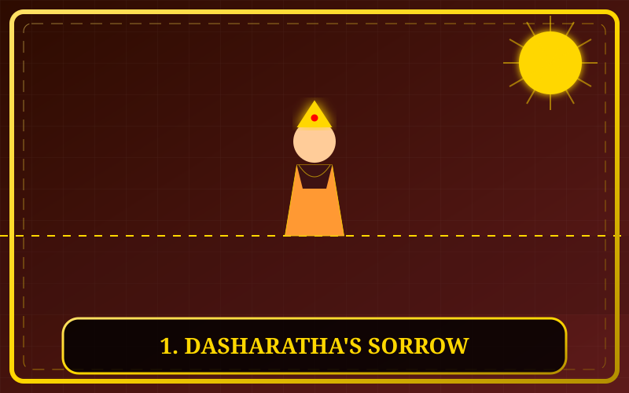
In the golden city of Ayodhya, King Dasharatha ruled with wisdom but carried a heavy heart. Despite his prosperity, he had no heir to continue the Ikshvaku lineage. He consulted his guru, Sage Vashistha, who advised him to perform a sacred ritual.
2. The Putrakameshti Yagna
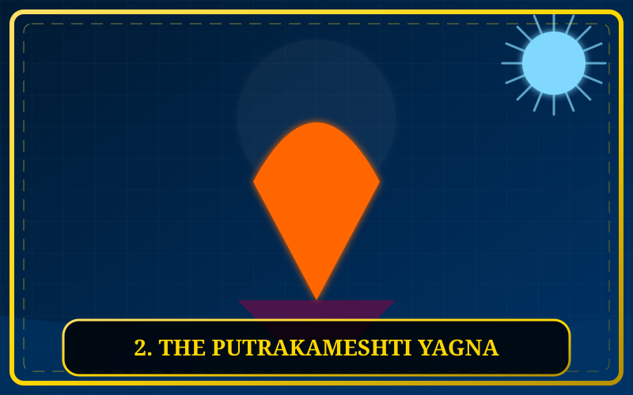
The great sage Rishyasringa performed the Putrakameshti Yagna. From the holy flames, a divine being emerged, offering a bowl of celestial payasam. Dasharatha distributed this among his three queens: Kausalya, Kaikeyi, and Sumitra.
3. Birth of the Divine Princes
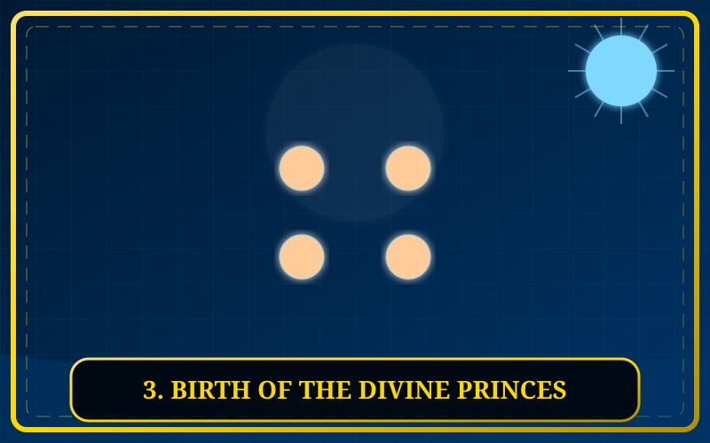
On the ninth day of Chaitra, Rama was born to Kausalya. Soon after, Kaikeyi gave birth to Bharata, and Sumitra to the twins Lakshmana and Shatrughna. The entire kingdom of Ayodhya celebrated the arrival of the divine incarnations.
4. Education and Training
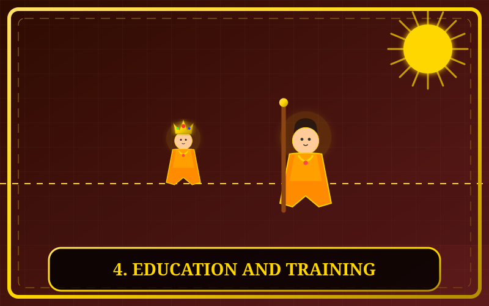
Under the guidance of Sage Vashistha, the four princes grew in wisdom and strength. They mastered the Vedas, the arts of governance, and the science of warfare, with Rama excelling in every field, embodying the ideal son and student.
5. Vishwamitra's Arrival
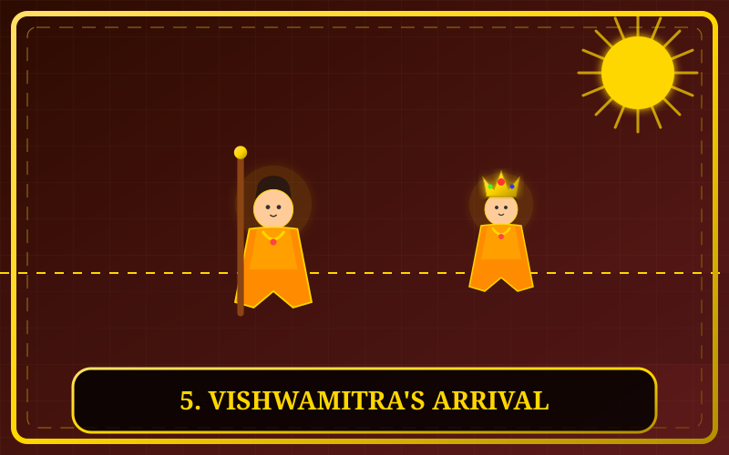
The formidable Sage Vishwamitra arrived at Dasharatha's court, requesting the help of young Rama to protect his sacred sacrifices from the demons Maricha and Subahu. Though hesitant, Dasharatha eventually agreed, sending Rama and Lakshmana.
6. Departure with the Sage
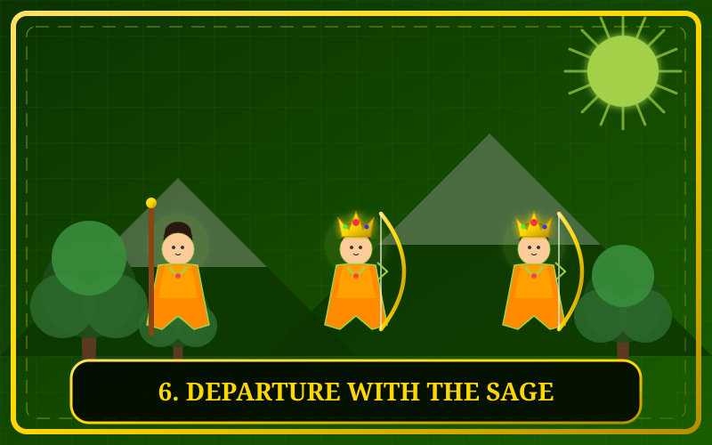
Rama and Lakshmana followed Vishwamitra into the wilderness. Along the way, the sage imparted divine knowledge and powerful mantras (Bala and Atibala) to the princes, preparing them for the challenges ahead.
7. Slaying of Tataka
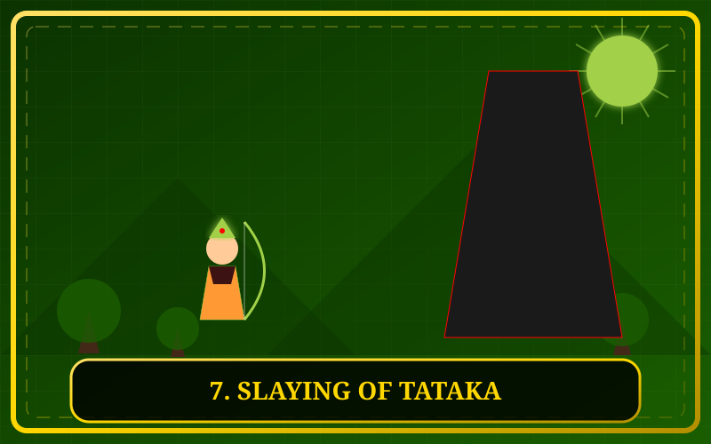
In the forest of Malada and Karusha, the demoness Tataka terrorized the land. On Vishwamitra's command, Rama overcame his hesitation to strike a woman and slew her with a single arrow, restoring peace to the region.
8. Protection of the Sacrifice
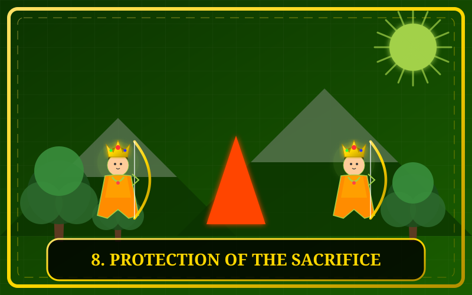
At Vishwamitra's ashram, Siddhashrama, Rama and Lakshmana guarded the yagna for six days and nights. When Maricha and Subahu attacked, Rama killed Subahu and hurled Maricha far into the ocean with a powerful arrow.
9. Redemption of Ahalya
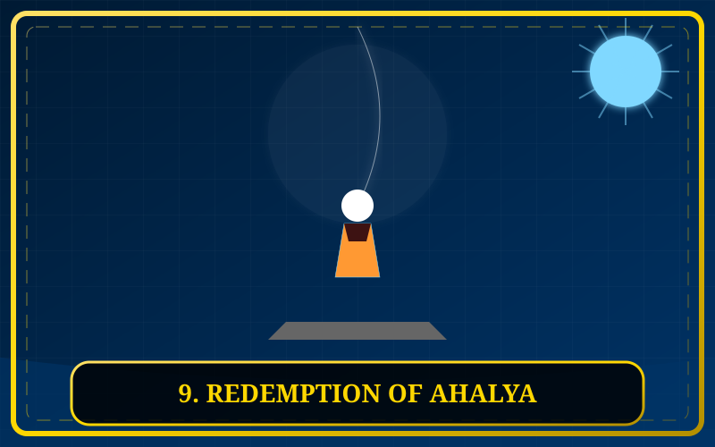
On their way to Mithila, they passed the deserted ashram of Sage Gautama. Rama's feet touched a stone, which instantly transformed back into Ahalya, the sage's wife, who had been cursed for ages. She was finally liberated from her suffering.
10. Arrival in Mithila
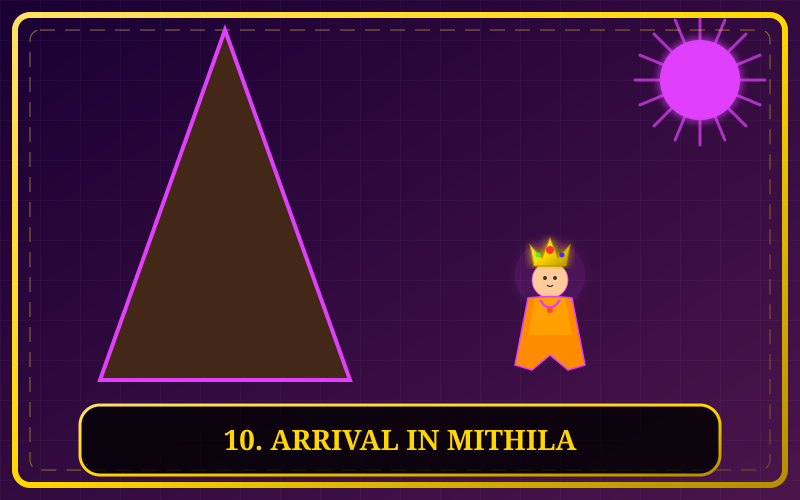
The party reached the beautiful city of Mithila, ruled by the philosopher-king Janaka. The city was abuzz with excitement for the Swayamvara of Princess Sita, who was found by Janaka in a furrow of the earth.
11. The Challenge of Shiva's Bow
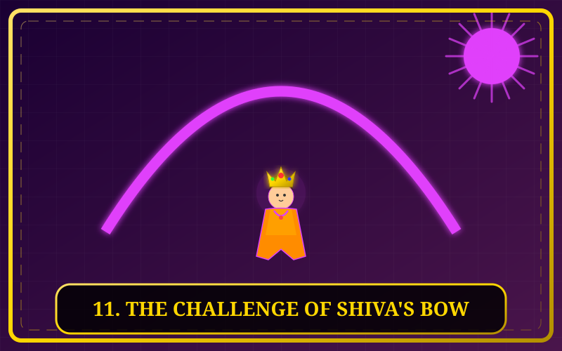
King Janaka announced that whoever could string the massive bow of Lord Shiva, known as Pinaka, would win Sita's hand. Many kings and princes had tried and failed, unable to even move the divine weapon.
12. Rama Breaks the Bow
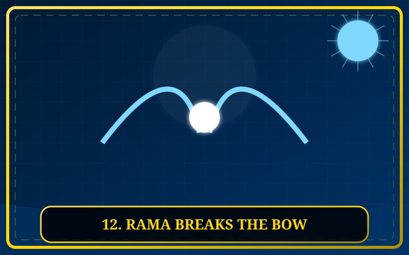
With Vishwamitra's blessing, Rama approached the bow. He lifted it effortlessly, and as he attempted to string it, the bow snapped with a thunderous sound that echoed through the heavens. Sita joyfully placed the garland around Rama's neck.
13. The Grand Wedding
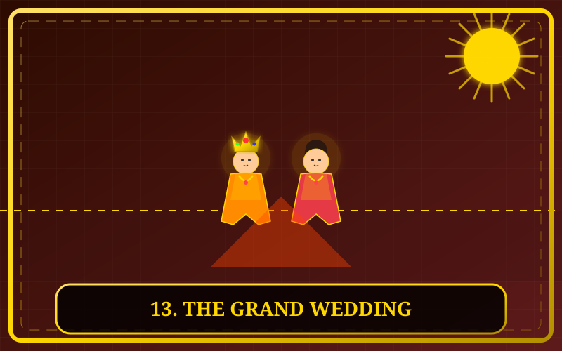
A grand messenger was sent to Ayodhya. King Dasharatha arrived with his court. In a magnificent ceremony, Rama married Sita, Lakshmana married Urmila, Bharata married Mandavi, and Shatrughna married Shrutakirti.
14. Encounter with Parashurama
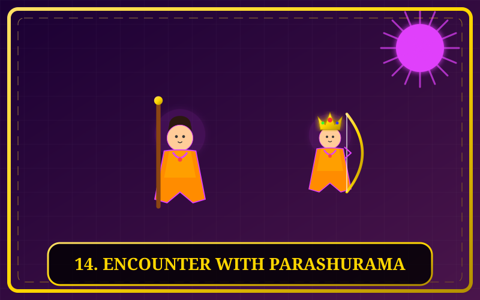
On the return journey, the fierce Sage Parashurama challenged Rama, angered by the breaking of Shiva's bow. Rama calmly proved his divinity by stringing Vishnu's bow, and Parashurama, recognizing Rama's true nature, retired to the mountains.
15. Plans for Coronation
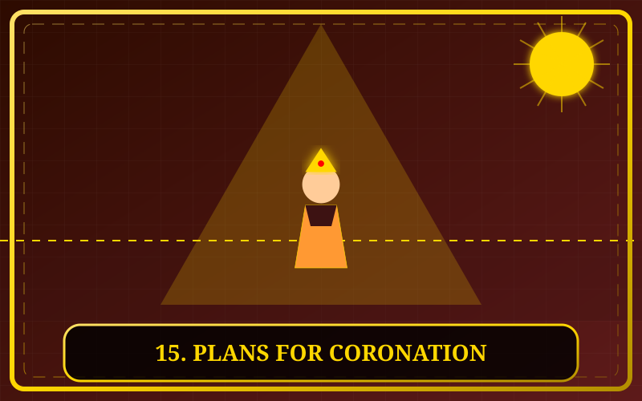
Years passed in happiness. King Dasharatha, feeling the weight of age, decided to crown Rama as the Yuvaraja (Crown Prince). The citizens of Ayodhya were overjoyed, and preparations for the coronation began with great fervor.
16. Manthara's Poison
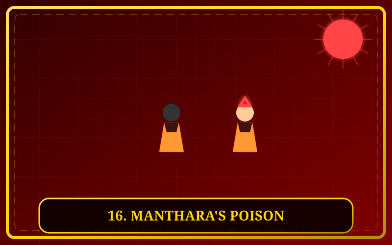
Manthara, the hunchbacked maid of Queen Kaikeyi, became envious. She poisoned Kaikeyi's mind, convincing her that Rama's coronation would lead to Bharata's downfall and her own loss of status as a queen.
17. The Two Boons
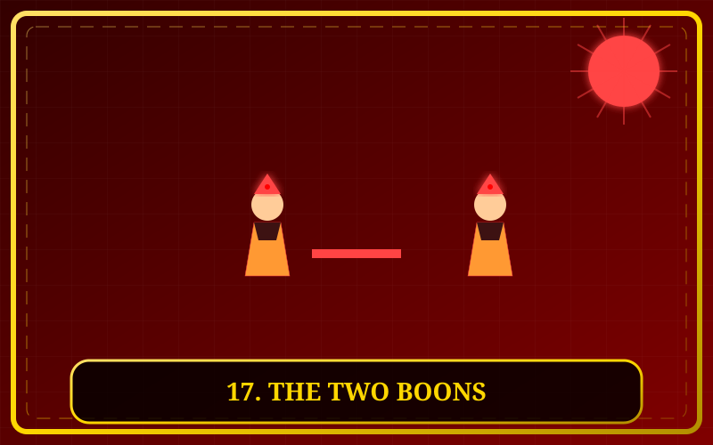
Kaikeyi retreated to the 'Chamber of Anger'. When Dasharatha came to console her, she demanded the two boons he had promised her years ago: that Bharata be crowned king and that Rama be exiled to the forest for fourteen years.
18. Rama's Acceptance
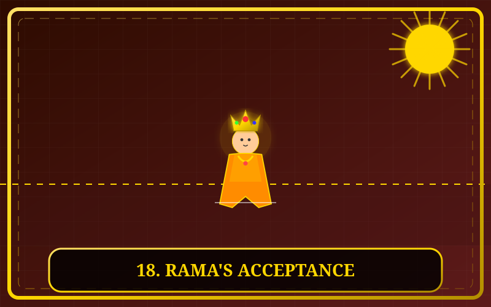
Bound by his word, a devastated Dasharatha could not refuse. When Rama learned of the boons, he accepted them without a moment's hesitation or anger, prioritizing his father's honor and the sanctity of truth above all else.
19. Sita and Lakshmana's Resolve
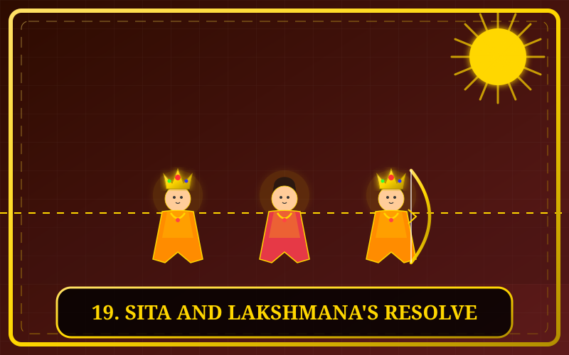
Rama tried to persuade Sita and Lakshmana to stay in Ayodhya. However, Sita insisted that her place was by her husband's side, and Lakshmana vowed to serve his brother in the forest. Together, they donned bark garments.
20. Departure from Ayodhya
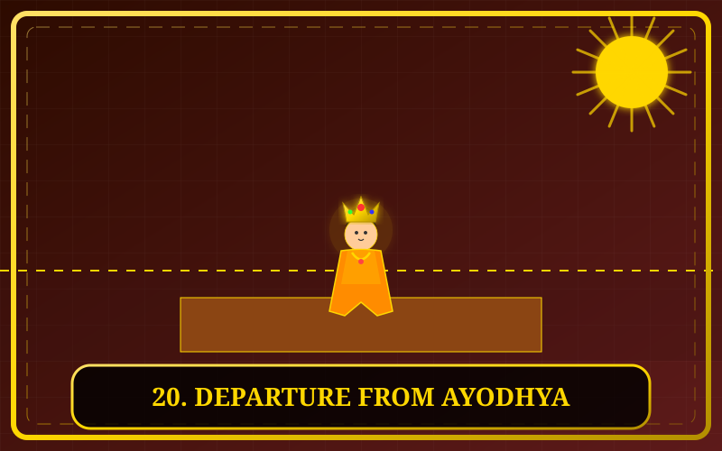
As the trio left the city in a chariot driven by Sumantra, the people of Ayodhya wept and followed them to the banks of the Tamasa River. Rama, wanting to spare them further pain, slipped away quietly during the night.
21. Crossing the Ganges
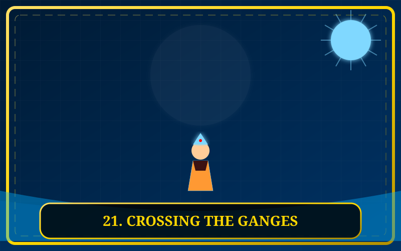
At Shringaverapura, they met Guha, the chief of the Nishadas. He offered them hospitality and helped them cross the mighty Ganges in his boat. Rama bid farewell to Sumantra, sending him back to the grieving city.
22. Arrival at Chitrakoot
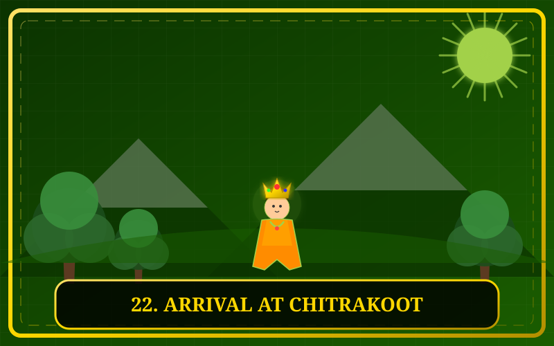
Following the advice of Sage Bharadwaja, they settled on the scenic Chitrakoot hill. Lakshmana built a sturdy hut of leaves and wood. They lived a simple, peaceful life, surrounded by the beauty of nature and the company of sages.
23. Dasharatha's Passing
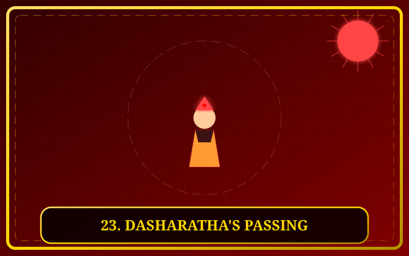
Back in Ayodhya, King Dasharatha could not bear the separation from his beloved son. Recalling a curse from his youth when he accidentally killed Shravana Kumar, he breathed his last, calling out Rama's name.
24. Bharata's Return
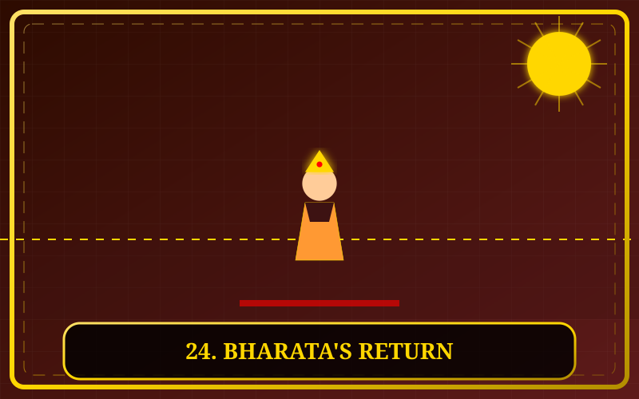
Bharata, returning from his maternal uncle's kingdom, was horrified to learn of his mother's deeds and his father's death. He refused the crown, performed the funeral rites, and vowed to bring Rama back to Ayodhya.
25. The Paduka Rajyabhisheka
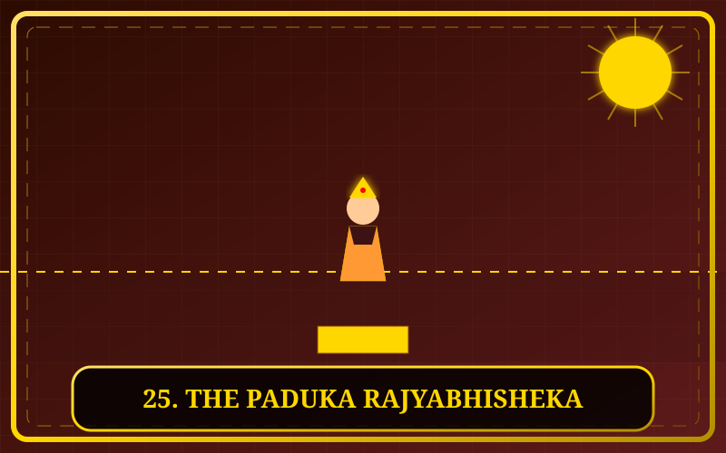
Bharata met Rama at Chitrakoot and pleaded with him to return. Rama insisted on fulfilling his father's promise. Bharata then took Rama's sandals (Padukas), placing them on the throne as a symbol of Rama's authority, and ruled from Nandigram.
26. Into the Dandaka Forest
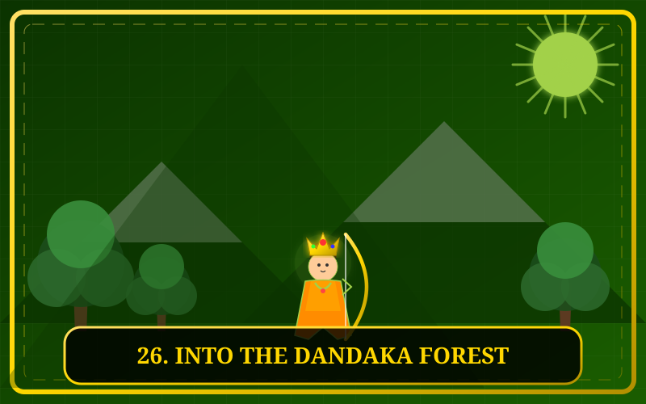
To avoid further visits from Ayodhya, Rama moved deeper into the Dandaka forest. They visited many hermitages, promising the sages protection from the Rakshasas who disturbed their penance and sacrifices.
27. Meeting Sage Agastya
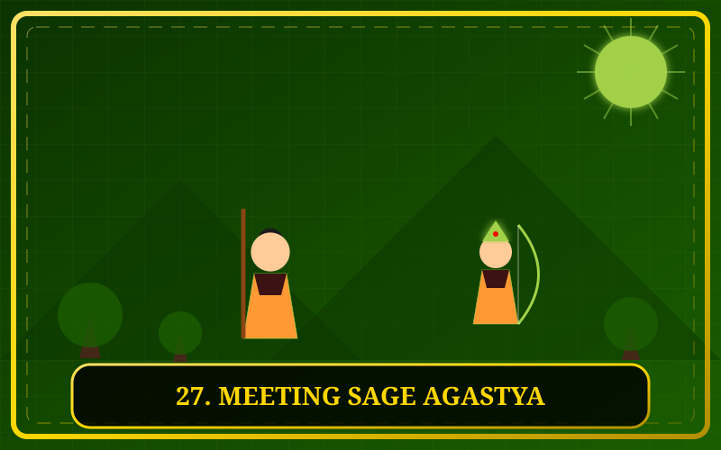
They met the great Sage Agastya, who welcomed them warmly. He gifted Rama the divine bow of Lord Vishnu, an inexhaustible quiver of arrows, and a powerful sword, foreseeing the great battle that lay ahead.
28. Shurpanakha's Encounter
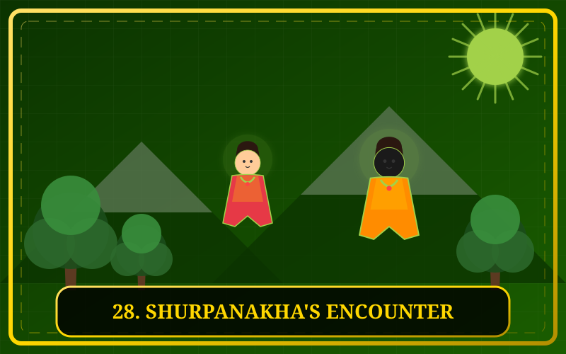
At Panchavati, the demoness Shurpanakha, sister of Ravana, saw Rama and was smitten. When her advances were rejected and she tried to attack Sita, Lakshmana intervened and cut off her nose and ears as punishment.
29. Battle with Khara and Dushana
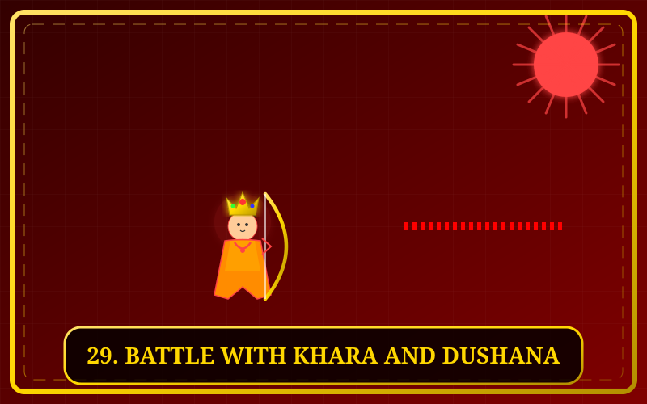
A vengeful Shurpanakha returned with her brothers Khara and Dushana and an army of fourteen thousand demons. Rama, standing alone, defeated the entire host with his divine archery, showcasing his unparalleled prowess.
30. The Golden Deer Plot
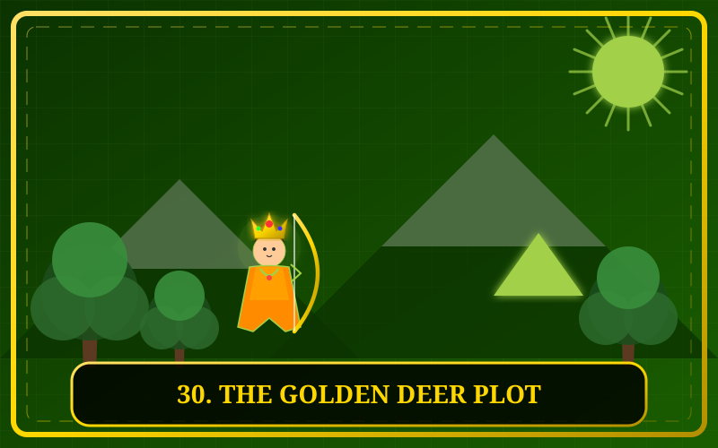
Shurpanakha fled to Lanka and incited Ravana. Ravana forced the demon Maricha to take the form of a beautiful golden deer. Sita, enchanted by its beauty, asked Rama to capture it for her.
31. The Abduction of Sita
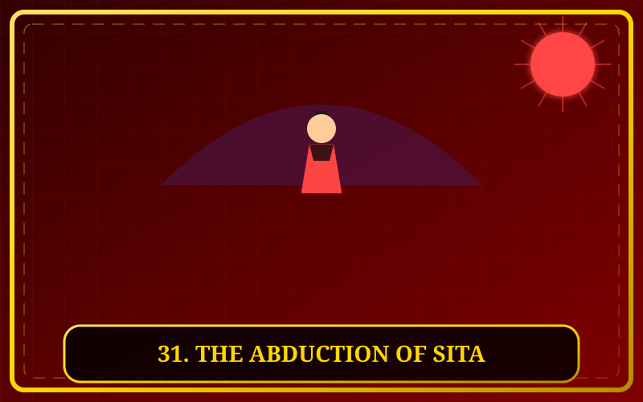
While Rama and Lakshmana were lured away by Maricha's tricks, Ravana appeared as a wandering ascetic. He forcibly abducted Sita, carrying her away in his aerial chariot, the Pushpaka Vimana, towards the island of Lanka.
32. Jatayu's Sacrifice
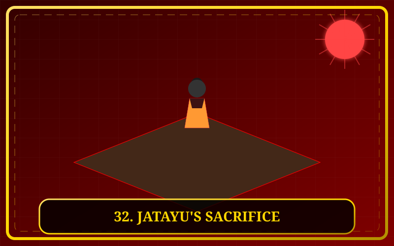
The aged vulture-king Jatayu heard Sita's cries and fought Ravana valiantly. Though he managed to damage the chariot, Ravana cut off his wings. Jatayu fell to the earth, clinging to life just long enough to inform Rama of the direction Ravana took.
33. Rama's Grief and Search
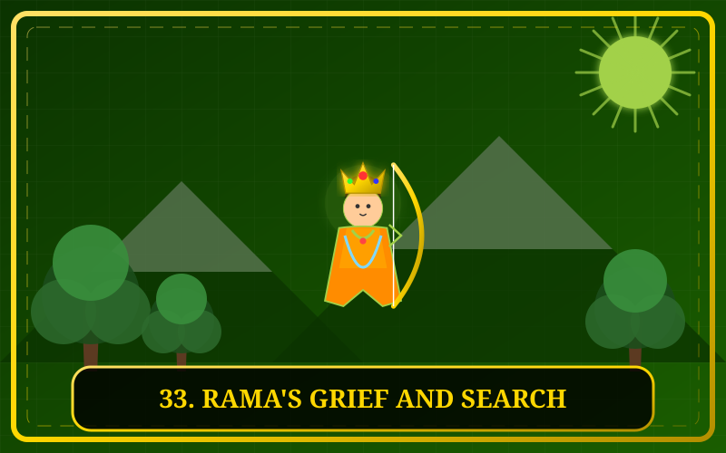
Rama was devastated by Sita's disappearance. He and Lakshmana searched the forests, questioning the trees and animals. They performed the last rites for Jatayu and continued south, meeting the demon Kabandha who directed them towards Pampa Lake.
34. Meeting Shabari
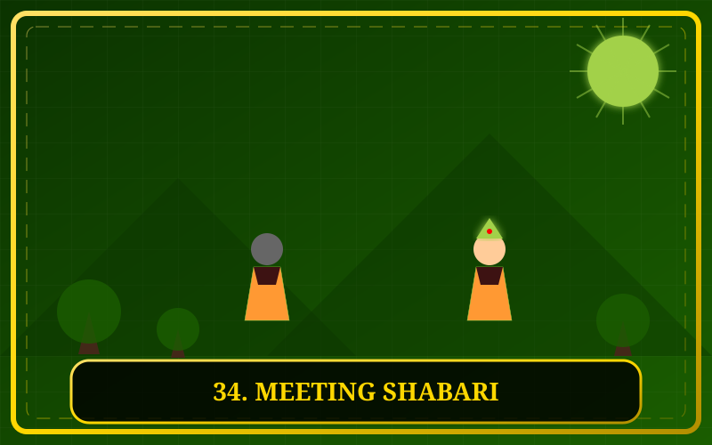
At the ashram of Sage Matanga, they met the elderly devotee Shabari. She had waited years for Rama's arrival. She offered him berries, tasting each one to ensure they were sweet. Rama, touched by her pure devotion, accepted them gladly.
35. Meeting Hanuman
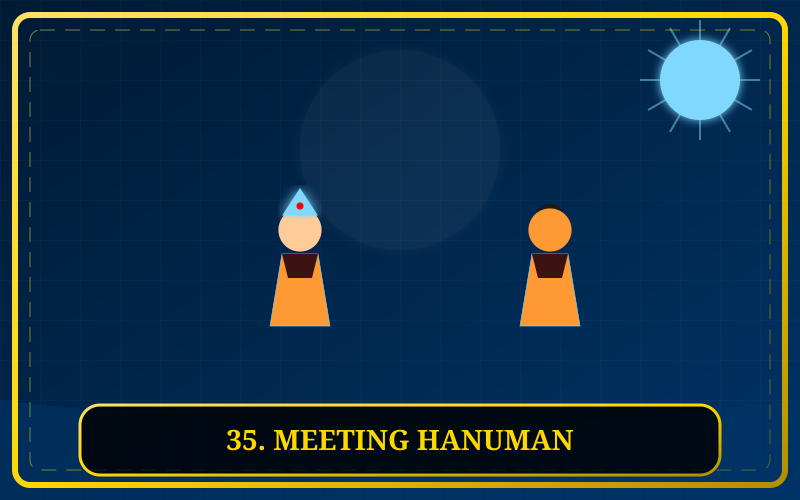
Near Pampa Lake, they were approached by Hanuman, the minister of the Vanara King Sugriva. Disguised as a scholar, Hanuman was impressed by Rama's noble bearing. He carried them on his shoulders to meet Sugriva on Rishyamukha Hill.
36. Alliance with Sugriva
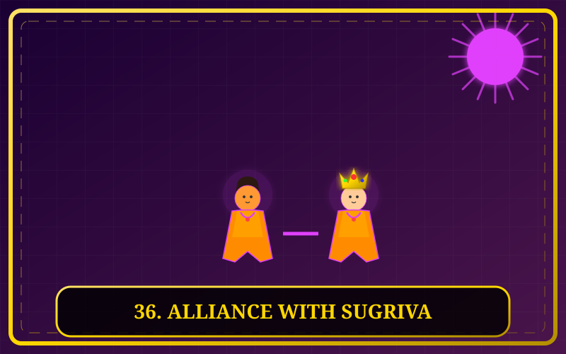
Rama and Sugriva formed an alliance over a sacred fire. Rama helped Sugriva defeat his brother Vali, who had unjustly exiled him. In return, Sugriva pledged his entire Vanara army to find Sita.
37. Hanuman in Lanka
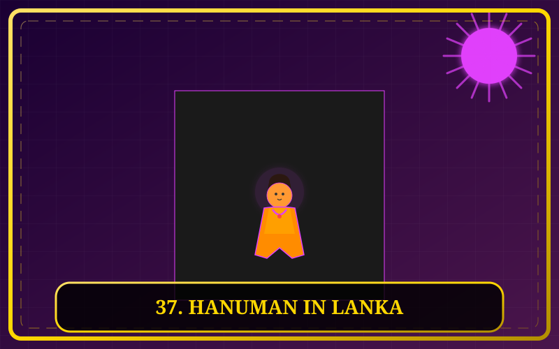
Hanuman leaped across the ocean and found Sita in the Ashoka Vatika. He gave her Rama's ring and reassured her. He also destroyed the garden and killed many of Ravana's warriors, including his son Aksha Kumar.
38. The Burning of Lanka
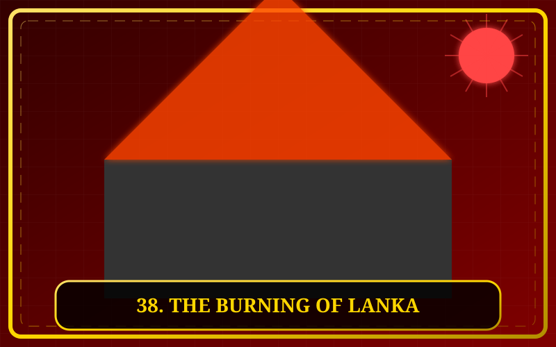
Captured and brought before Ravana, Hanuman's tail was set on fire. He escaped and used the flames to burn down the city of Lanka, demonstrating the power of Rama's messenger before returning with Sita's jewel.
39. Building the Rama Setu
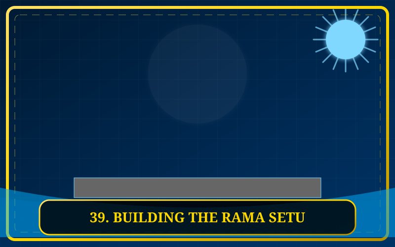
The Vanara army reached the shore. Under the direction of Nala and Nila, they built a bridge of floating stones across the sea. The entire army crossed over to Lanka, ready for the final confrontation with Ravana.
40. Victory and Coronation
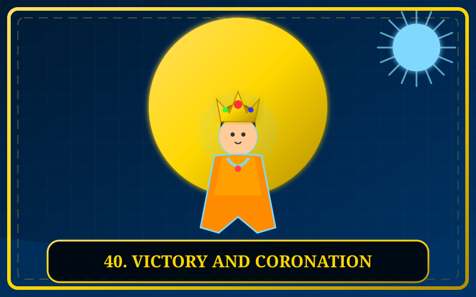
After a fierce battle, Rama defeated Ravana with the Brahmastra. Sita was rescued, and after the Agni Pariksha, they returned to Ayodhya. Rama was crowned King, establishing 'Rama Rajya', a reign of perfect peace and justice.